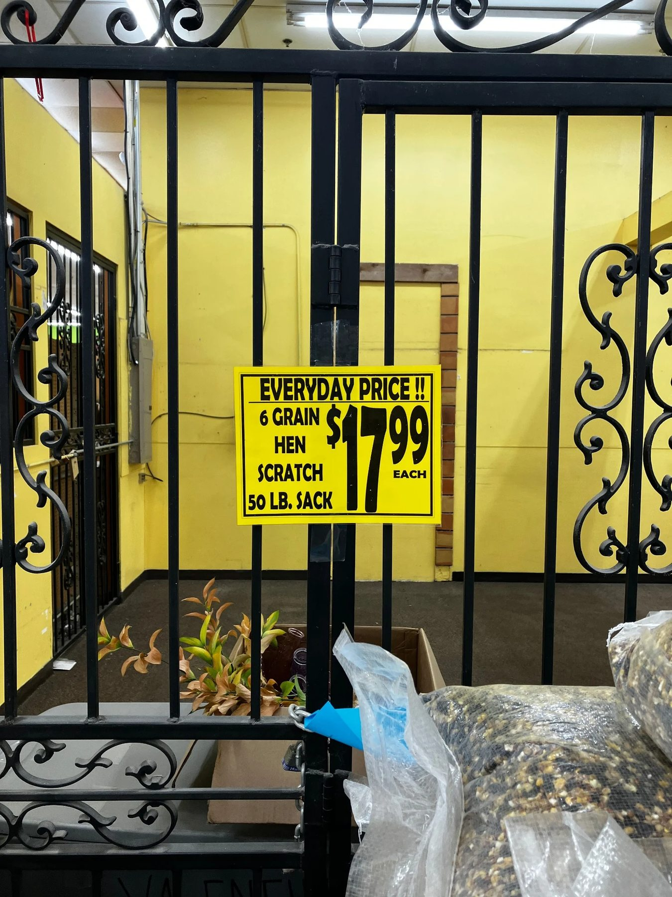
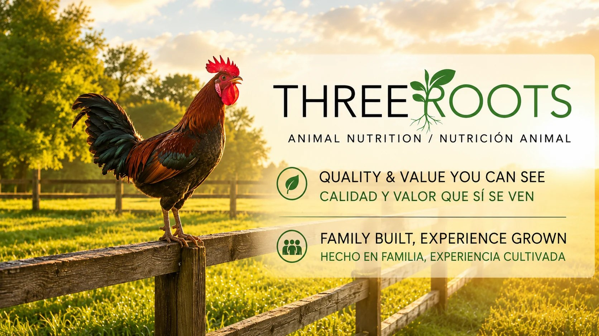
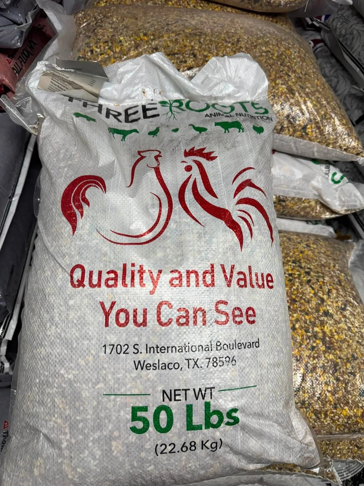
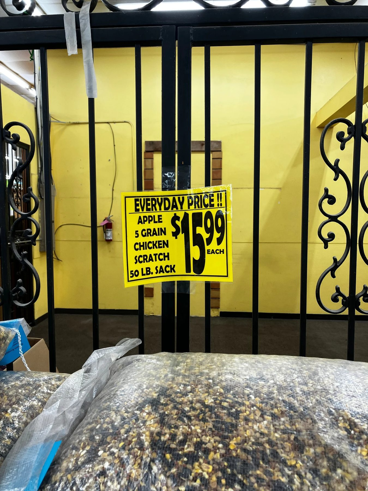
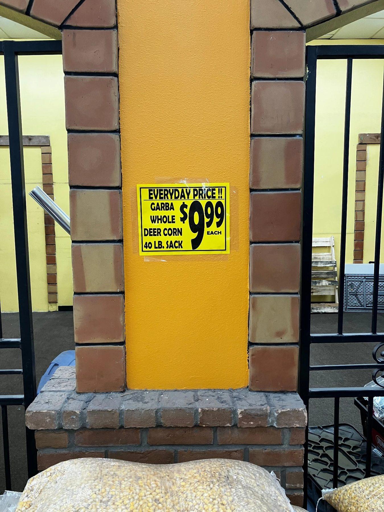
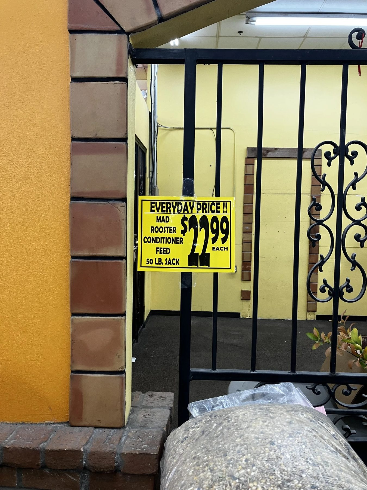
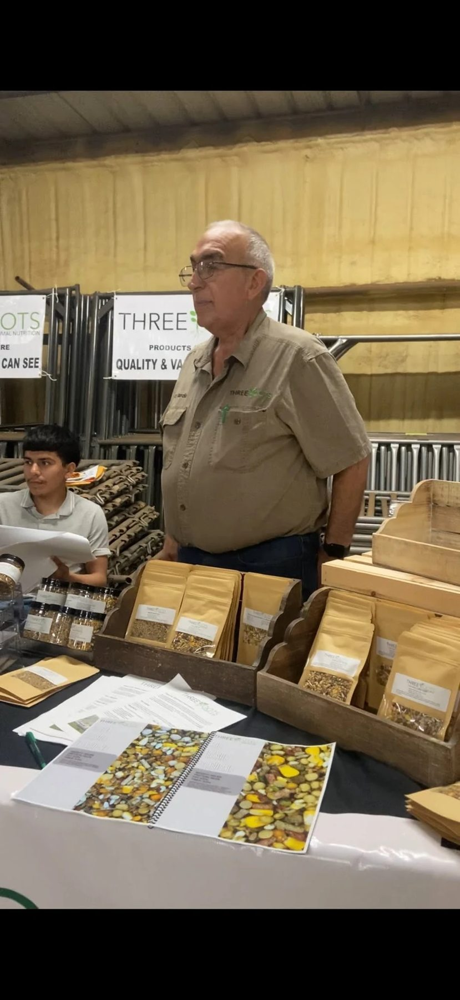
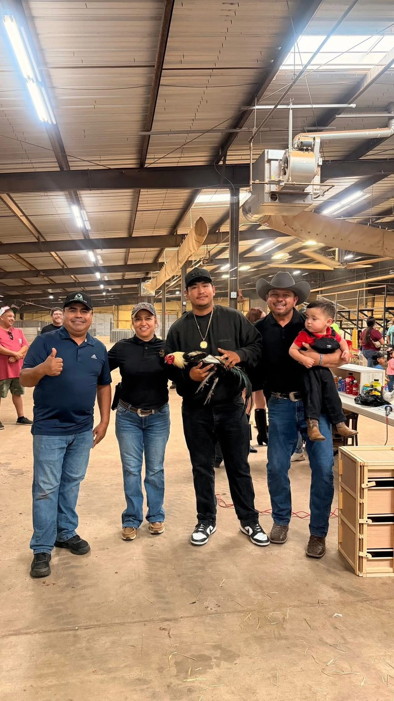
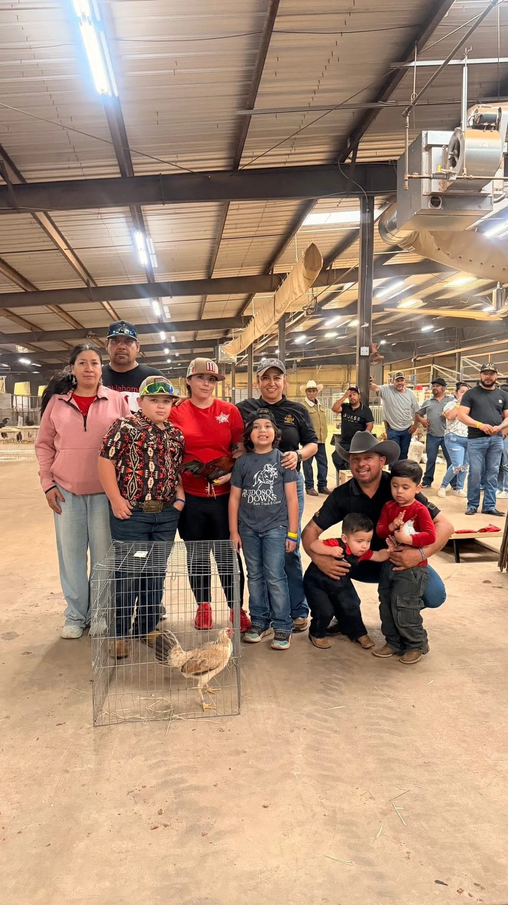
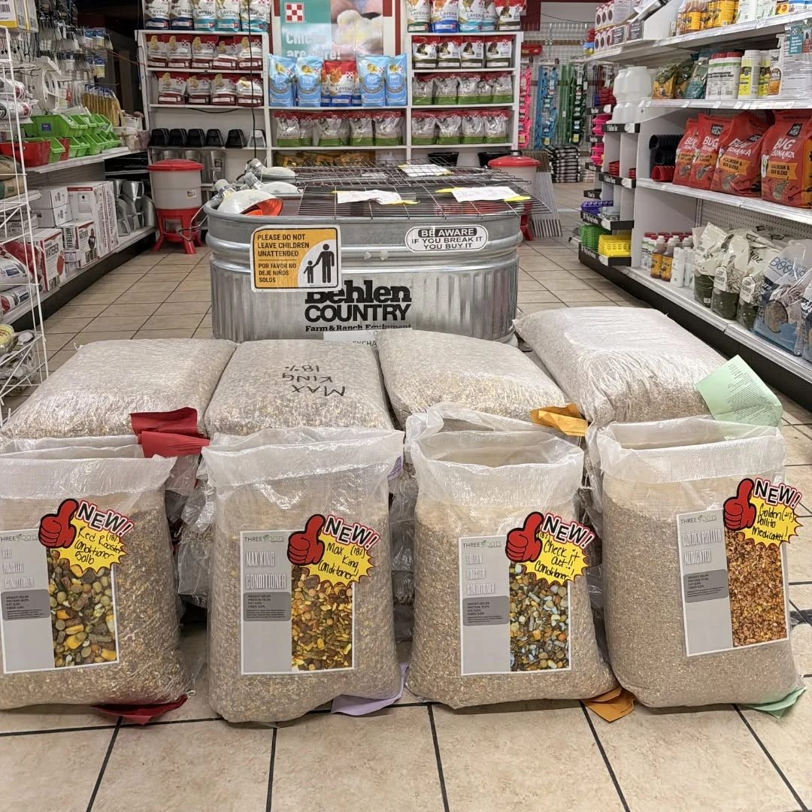

Feed with purpose. Raise with confidence.
Practical animal nutrition, local service and feed options for ranch families, youth exhibitors, retailers and animal owners across South Texas.
Weslaco, TexasLocal office & warehouse
Bilingual ServiceEnglish / Español
Dealer AvailabilityRGV & participating retailers
Nationwide OptionsUPS • FedEx • LTL • FTL
Shop by animal
Start with the animal. Find the right feed conversation.
A professional site should help customers quickly identify the feed category they need, then connect them to product details, availability and expert guidance.
🐓
Poultry
Hens, roosters & flock needs🐐
Goats
Ranch & show programs🐖
Swine
Growing & show animals🐄
Cattle
Calves & ranch cattle🐑
Sheep
Small-ruminant feed options🐎
Horses
Ask about suitable optionsDemo note: these category cards are ready for premium royalty-free animal photography in the production version.
Featured feed
Turn every bag into a product page.
Clear labels, guaranteed analysis, intended use, bag size, retailer availability and one-click contact make it easier for customers to buy with confidence.

THREE ROOTS
Super Mix 9 Grains
50 LB BAGPOULTRYCATTLESHEEPGOATSSWINE
A multi-grain feed blend with a current label showing cracked corn, wheat, safflower seed, sorghum, oats, peas, sunflower seed, canola oil and cane molasses among the listed ingredients.
13%Crude Protein Min
6%Crude Fat Min
6%Crude Fiber Max
14%Moisture Max
Always follow the current product label and appropriate professional guidance for the animal's species, age and production stage.






Real community. Real events.
Built around the people who feed, raise and show.
Authentic Three Roots trade-show and stock-show photography gives the brand something generic national websites cannot manufacture: local relationships and visible participation.
✓Trade-show product education
✓Support for youth exhibitors and ranch families
✓Customer photos that establish local credibility
Performance-feed marketing is strongest when product information, professional guidance and authentic customer stories work together.
For nutritionists & veterinarians
Invite professional evaluation—not exaggerated claims.
Three Roots can earn professional trust by making current labels, guaranteed analyses, ingredients, intended use and manufacturer contact easy to review.
Transparency
Current product information
Provide readable labels, guaranteed analysis, ingredients and handling information for independent professional review.
Local access
Direct manufacturer contact
A local Weslaco team can answer product and availability questions and provide current documentation when available.
Professional judgment
Animal-specific decisions
Feed selection should consider species, age, production stage, health status and the complete ration. Professional judgment comes first.
Grow with Three Roots
Become a Three Roots dealer.
Turn the website into a distribution tool for feed stores, farm-and-ranch retailers and commercial buyers—not just a brochure for consumers.
Wholesale pricing inquiry
Pallet & LTL quotes
Full truckload inquiry
Territory & product availability

Where to buy & warehouse
Local roots. Regional reach. Nationwide shipping options.
Three Roots is based at 1702 S. International Blvd in Weslaco, Texas. Product selection and retailer inventory may vary by location; call or text before traveling.
Weslaco Office & Warehouse
1702 S. International Blvd
Weslaco, TX 78596
(956) 520-8606
Cities & markets served
Del RioUvaldeSan AntonioAustinHoustonDallasAliceVictoriaCorpus ChristiLaredoHebbronvilleZapataRio Grande CityRomaLa JoyaMcCookEdinburgMcAllenPharrAlamoSan JuanMercedesRaymondvilleHarlingenOlmitoLos FresnosBrownsville
UPS Ground
Eligible parcel-size orders.
Eligible parcel-size orders.
FedEx Ground
Eligible parcel-size orders.
Eligible parcel-size orders.
LTL Freight
Palletized commercial shipments.
Palletized commercial shipments.
Full Truckload
High-volume commercial inquiries.
High-volume commercial inquiries.
Carrier, rate and service availability depend on order size, destination, product and current freight conditions.
Make buying easy
Scan. Text. Ask. Buy.
A QR code turns every bag, trade-show sign, business card and dealer display into a direct sales channel to Three Roots.
TEXT US / ENVÍENOS UN MENSAJEScan for feed, pricing & availability.